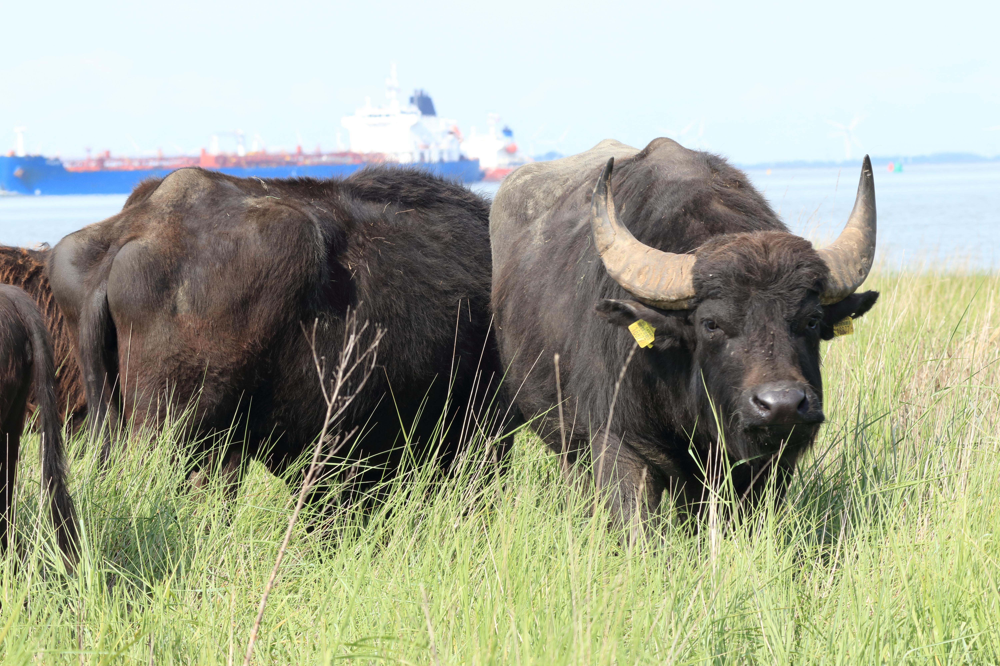

MSc Thesis: Salt Marsh Vegetation & Water Buffalo In progress
My ongoing master's thesis combines LiDAR and satellite data to map vegetation structure and heterogeneity in a Dutch salt marsh (Schor van Baalhoek). The aim is to assess how the introduction of water buffalo in 2021 has influenced the vegetation of the area.
Role: Independent thesis research (WUR)